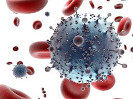
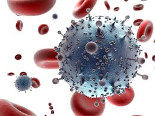

VIH/Sida
.jpg)
VIH es la sigla del virus de inmunodeficiencia humana. El VIH es un virus que mata o daña las células del sistema inmunológico del organismo. SIDA es la sigla del síndrome de inmunodeficiencia adquirida. Es el estadio más avanzado de esta infección. El VIH suele contagiarse a través de las relaciones sexuales sin protección con una persona infectada. El SIDA también puede contagiarse por compartir agujas con drogas o mediante el contacto con la sangre de una persona infectada. Las mujeres pueden transmitírselo a sus bebés durante el embarazo o el parto. Los primeros signos de infección con VIH pueden ser inflamación de los ganglios y síntomas gripales. Los mismos pueden presentarse y desaparecer un mes o dos después de la infección. Los síntomas graves pueden no aparecer hasta pasados meses o años. Con un análisis de sangre se puede saber si una persona tiene una infección por VIH. El profesional de la salud puede realizar la prueba o llamar para una derivación a la línea nacional 1-800-CDC-INFO (en español y en inglés, las 24 horas del día, 1-800-232-4636; 1-888-232-6348 - TTY). No existe una cura, pero hay muchas medicinas para combatir la infección por VIH y las infecciones y cánceres que la acompañan. Las personas pueden vivir con la enfermedad por muchos años.
.jpg) 

¿Cómo diagnostican los médicos el VIH/SIDA?
Las pruebas más comunes analizan una muestra de sangre para buscar evidencia de que el organismo de una persona está combatiendo el VIH. Estas pruebas detectan los anticuerpos contra el VIH, sustancias que el organismo produce en respuesta a la infección.
Sin embargo, durante las primeras semanas luego de contraer el virus, estas pruebas podrían no revelar la infección. Esto se debe a que lleva cierto tiempo para que el sistema inmunitario produzca suficientes anticuerpos para que la prueba los detecten. Durante este período, es muy fácil para una persona con el virus contagiar a otra. El 97% de las personas desarrollará anticuerpos detectables en los primeros 3 meses posteriores a la infección, pero un pequeño porcentaje de personas puede tardar más tiempo. En estos casos, pueden realizarse diferentes pruebas para buscar partes del material genético del virus en la sangre.
El VIH se propaga por contacto con ciertos líquidos corporales de una persona seropositiva:
La propagación de una persona a otra se llama transmisión del VIH.
No se puede contraer la infección por el VIH al dar la mano, abrazar o besar con la boca cerrada a una persona seropositiva. Tampoco por entrar en contacto con objetos como inodoros, agarraderas de puertas o platos que haya usado una persona seropositiva.
.jpg)
.jpg)
¿Cómo puedo reducir el riesgo de contraer la infección por el VIH? Cualquier persona puede contraer la infección por el VIH; sin embargo, usted puede tomar medidas de protección.
• Hágase la prueba de detección del VIH y averigüe si su pareja tiene el virus o no. Hable con su pareja sobre la prueba de detección del VIH y hágasela antes de tener relaciones sexuales.
• Tenga relaciones sexuales menos arriesgadas. Las relaciones sexuales por vía oral son mucho menos arriesgadas que las realizadas por vía anal o vaginal. El coito anal es la clase de relaciones sexuales más arriesgadas para la propagación del VIH.
• Use condones. Use un condón cada vez que tenga relaciones sexuales por vía vaginal, anal u oral. Lea la siguiente hoja informativa sobre la forma de usar condones correctamente.
• Limite su número de parejas sexuales. Si tiene más de una pareja sexual, hágase la prueba de detección del VIH regularmente. Hágase la prueba de detección de infecciones de transmisión sexual (ITS) y trátese si tiene alguna, e insista en que sus parejas hagan lo mismo. La existencia de una ITS puede aumentar el riesgo de contraer la infección por el VIH.
• Hable con su proveedor de atención de salud sobre la profilaxis previa a la exposición (PrEP). La PrEP es un método de prevención de la infección por el VIH que consiste en tomar un medicamento contra ese virus todos los días. Se destina a las personas seronegativas, pero que están expuestas a alto riesgo de infección por el VIH de transmisión sexual. Siempre debe emplearse junto con otros métodos de prevención, incluso con condones.
• No se inyecte drogas, pero si lo hace, utilice solamente equipo de inyección y agua esterilizados y nunca comparta su equipo con otras personas. Soy VIH-positivo, pero mi pareja es VIH-negativa. ¿Cómo puedo proteger a mi pareja de la infección por el VIH? Tome sus medicamentos contra el VIH todos los días. El tratamiento con esos medicamentos (llamado tratamiento antirretroviral o TAR) ayuda a las personas seropositivas a tener una vida más larga y sana. El TAR no cura la infección por el VIH pero puede reducir su concentración en el cuerpo. Una menor concentración del virus en el cuerpo reducirá el riesgo de transmitírselo a su pareja durante las relaciones sexuales. Para mayor protección, usted también puede hablar con su pareja sobre la PrEP.
Inicio.jpg)
.jpg)
¿QUÉ SON LAS TERAPIAS ALTERNATIVAS? Se llama terapia “alternativa” o “complementaria” a los tratamientos que no “encajan” en la práctica estándar de medicina occidental. Estas pueden ser: Prácticas de curación tradicionales como la ayurveda (ver la hoja 702, acupuntura china y prácticas de los nativos indígenas americanos (hoja 708)
Terapias físicas como la quiropráctica, masajes y yoga
Homeopatía o hierbas (ver la hoja 704 sobre yerbas chinas)
Trabajos de energía como la terapia de polaridad o reiki
Técnicas de relajación como meditación y visualización
Suplementos dietéticos como vitaminas y minerales, ver la hoja 801 Algunos proveedores de servicios de salud prefieren combinar terapias alternativas junto con la medicina occidental. Creen que los tratamientos alternativos reducen el estrés, alivian efectos secundarios de los medicamentos antirretrovirales (ARVs) o brindan otros beneficios. Otros proveedores de servicios de salud no están de acuerdo con las terapias alternativas. Creen que no se han hecho suficientes estudios sobre ellas y piensan que los pacientes siempre responden mejor a las medicinas occidentales.
¿FUNCIONAN? Es difícil encontrar buena información con respecto a las terapias alternativas. Consiga la mayor información posible antes de comenzar a usarlos. Trate de averiguar: ¿Cómo y cuándo fue desarrollada? ¿De qué manera funciona? ¿Existen artículos o estudios sobre este tratamiento? ¿Hay profesionales entrenados o con licencia en dicho tratamiento? ¿Qué efectos secundarios u otros riesgos tiene? En algunas ocasiones esta información no está disponible. Sin embargo, si usted cree que alguien le oculta algo, tenga mucho cuidado. Quizás se haya expuesto a un fraude.
¿POR QUÉ NO SE HACEN MÁS ESTUDIOS SOBRE TERAPIAS ALTERNATIVAS? Terapias alternativas no son siempre diseñadas para tratar una enfermedad o condición específica: algunos tratamientos alternativos tratan a la persona en su totalidad, no a una enfermedad. Pueden restaurar la armonía, el balance o el flujo normal de energía. Los acupunturistas por ejemplo, utilizan el pulso para determinar si la energía de su cuerpo está balanceada. La acupuntura se basa en la energía individual de cada persona y no en su VIH. Este tipo de tratamiento puede resultar benéfico para las personas VIH positivas a pesar de que no están diseñados para combatir al VIH.
COLABORE CON SU PROVEEDOR DE SERVICIOS DE SALUD Dígale a su proveedor de servicios de salud lo más posible acerca de sus preferencias para tratar al VIH. Infórmele acerca de todos los tratamientos que use. Es muy importante, sobre todo si tiene alguna reacción negativa a lo que esté usando. Hay algunos tratamientos alternativos que no deben usarse en combinación con los ARVs. Por ejemplo, algunas hierbas bajan los niveles de ciertos ARVs. Averigüe qué tanto sabe su proveedor de servicios de salud acerca de las terapias alternativas. Lo ideal sería que su proveedor de servicios de salud lo apoye y lo ayude a evaluar los tratamientos alternativos en los que usted esté interesado.
.jpg)
.jpg)
¿Cómo se transmite el VIH? El VIH se transmite a través de sexo vaginal, oral o anal con una pareja infectada, compartiendo agujas (o incluso rastrillos o cuchillas) con una persona infectada o de una madre a su bebé durante el embarazo, nacimiento o lactancia. El VIH también se puede transmitir a través de una transfusión con sangre infectada. Ahora que todos los productos de la sangre son analizados y comprobados para ver si hay virus, y luego tratados con calor, el riesgo de infectarse por una transfusión sanguínea es muy pequeño. ¿Cómo puede afectar el VIH a mi embarazo y a la salud de mi bebé? Ser VIH positiva crea más riesgo de sufrir complicaciones como parto prematuro, restricción del crecimiento intrauterino y nacimiento de un bebé sin vida, aunque estos resultados son más comunes en los países en desarrollo. El riesgo de complicaciones es más alto para las mujeres con casos más avanzados, cuyos sistemas inmunológicos están comprometidos. También puedes contagiar el virus a tu bebé durante el embarazo, nacimiento o lactancia. Sin tratamiento, tu bebé tiene un 25 por ciento de posibilidades de resultar infectado. Elección del tratamiento Tu tratamiento dependerá de los resultados de tus pruebas, tu condición clínica, lo avanzado que esté tu embarazo y si ya estabas tomando medicamentos antirretrovirales. Tu doctor tendrá en cuenta, la información que exista acerca de cualquier efecto potencial que la medicación pueda tener en tu bebé. Decidir qué drogas usar, para tratar a las personas infectadas con VIH, es especialmente complicado durante el embarazo porque hay dos pacientes, la madre y su bebé. Sin embargo, existe un antiviral llamado zidovudina que es muy efectivo y previene la transmisión vertical hasta en un 70 por ciento.
.jpg)
.jpg)
Organizaciones Albergues de México - institución que brinda apoyo emocional, espiritual y médico a personas que han contraído Sida, y a sus familiares y amigos.
Amigos Contra el SIDA, A.C. - Listado de organizaciones en México, eventos y publicaciones.
Consejo Nacional de Prevención y Control del VIH/SIDA e ITS - Historia de la organización, temas médicos y sociales, prevención y eventos.
Fundación México Vivo - Creación y desarrollo del centro más avanzado en México para el tratamiento e investigación de enfermedades relacionadas con el VIH/SIDA y la Tuberculosis.
Vida sin Sida - Prevención, orientación, estadísticas, síntomas, historia, apoyo y contacto.
Acción Ciudadana Contra el SIDA (ACCSI) Actua - Asociación de personas afectadas por VIH/SIDA que ofrece una página experimental de información y soporte en línea.
Apoyo Positivo - Un intento por satisfacer las necesidades críticas para el bienestar de los pacientes que sufren del SIDA.
Asociación Ciudadana Cántabra Anti Sida - Información sobe esta enfermedad, tratamientos, transmisión, prevención y consultas. Basida
- Asociación benéfica con casas de acogida a enfermos terminales de Sida y programas para desintoxicación de drogodependientes y exreclusos.
Comisión Ciudadana Anti-sida de Álava - Información sobre la asociación, proyectos VIH/SIDA, sexualidad y otros temas relacionados.
Corporación de Lucha contra el SIDA - Organización de lucha contra el SIDA. Fundación anti-SIDA de San Francisco, La - Boletín de noticias, trabajos voluntarios y donaciones Fundación Asistencial Materno-Infantil de Ayuda a Niños Carenciados y Discapacitados (FUNDAMIND) -
Programas para chicos con SIDA, información en línea sobre VIH y SIDA y otros programas y actividades de ayuda. Ayudaresgratis.com
Portal de la Fundación Huesped para la lucha contra el HIV, a través del cual se realizan donaciones haciendo un click en el sitio. Fundación Huésped
Educación preventiva en el área de HIV y apoyo asistencial a instituciones públicas e individuos. Fundación Omefa - Organización médico educativa, relacionada con la educación familiar acerca del SIDA y otras enfermedades.
Fundación R.E.D. - Orientación, prevención y defensa de los derechos de las personas que viven con vih-sida. Manual virtual de prevención comunitaria. Legislación y medicamentos.
.jpg)
.jpg)